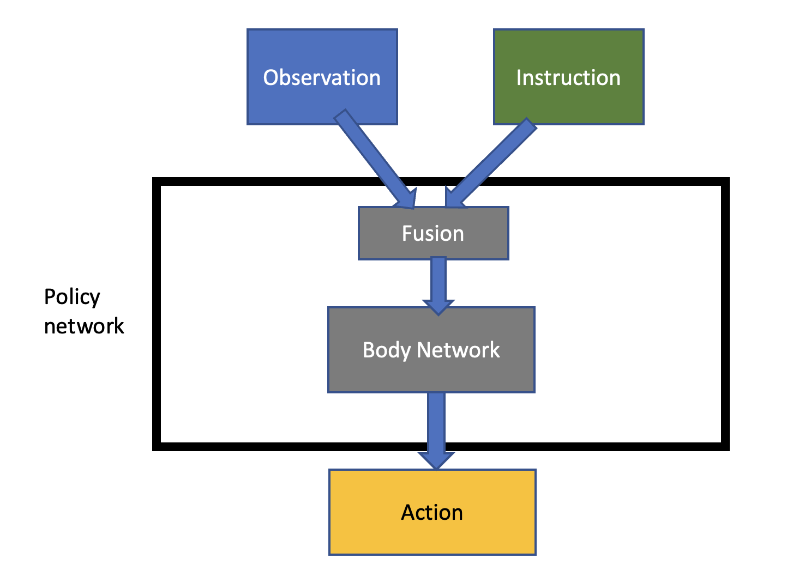
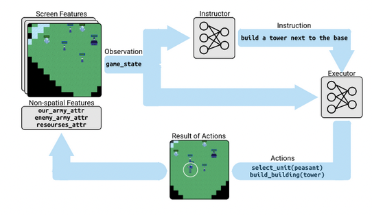
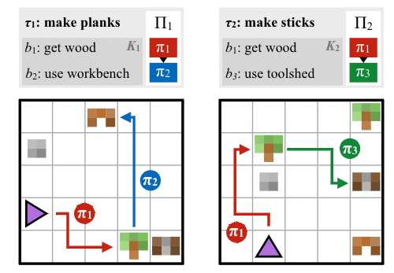
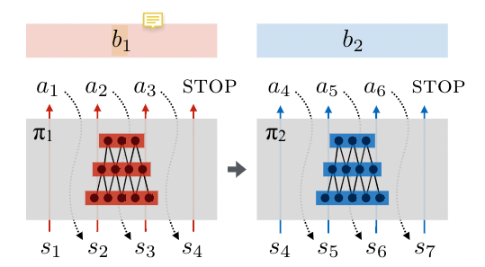
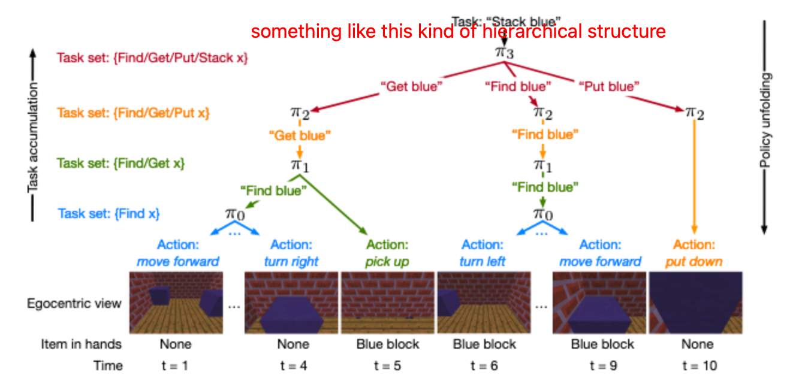
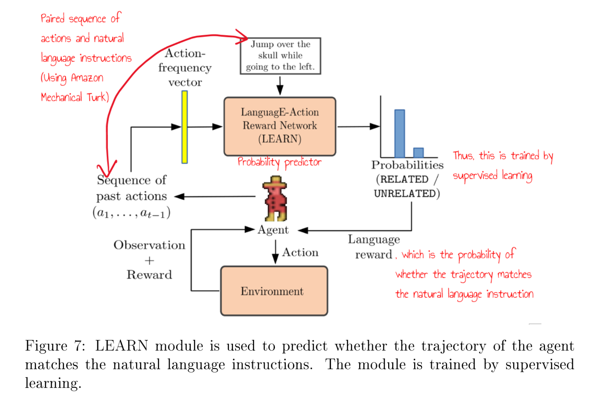

You need password to access to the content, go to Slack *#phdsukai to find more.
Part of this article is encrypted with password:
I am going to add some my thinkings in regard to Trevor’s response. I will first discuss the link between a language model and an agent’s policy network by introducing some of the current common NLP RL models.
After that, I want to talk about grounded language learning, by dividing it into smaller research aspects.
This Supplementary Notes is mainly discussing the big research problem, not the specific research questions.
Recall what is the reason that we want to combine RL with NLP#
- In terms of RL, the ability to learn a variety of compositional, long-horizon skills while generalising to novel concepts remain an open challenge
- Therefore, we want to leverage the compositional structure of language for enabling agents to perform long-horizon tasks and systematically generalise to new goals.
- i.e., sample efficiency and generalisation ability
But what is the SOTA RL NLP model? There is no consensus yet.
Common NLP RL models#
1. all-in-one model#
In this setting, the policy network takes both observations and the instructions as input

People believe that this model is able to effectively utilise the knowledge in the instruction.
In practice, we need to design many easier subtasks as “bread crumb” so as to provide a smooth learning experience.
Also, a good fusion model is essential for the performance.
In fact I have a big research question about the setting, which is
- how can we maintain the performance of RL agent once we remove the auxiliary instruction information
- I want to decouple language module from the main policy network. My motivation is inspired by an ancient saying “Give a Man a Fish, and You Feed Him for a Day. Teach a Man To Fish, and You Feed Him for a Lifetime”. I suspect that this type of model cannot function well once we remove the language signal.
2. Instructor-Executor model (here comes the language model)#
This is also known as “Architect-Builder” and the Architect is a language model that takes the observation as input and outputs an instruction that can guide the executor.

People do this because this “Actor-Critic” like model is more flexible compared to the above model because we can train two models separately
- Instructor handles high-level decision making and executor handles low-level action executions. Researchers believe that this division and cooperation of labor could enhance the performance
- In practice, researchers found that it is very hard to train a good Instructor model
- Intuition: Architect needs to be more intelligent because it has to have a big picture of the environment and strong knowledge of the task only based on the current observations, so as to provide valuable instruction to Builder.
3. Modular model#
Modular model will have multiple sub-task executor that handles their own specific tasks. The language information will decide which sub-task executor is going to work.


This is so far the most promising architecture I believe. The executor can be general and reusable .
- But still, it is hard to parse language instructions and activate the policy model accordingly.
- Also, we don’t know that is the most suitable architecture of policy model.
- we may want horizontal division of different sub-task executor that handles different tasks (e.g., fighting executor and building executor for Minecraft agent)
- but then, each sub-task executor would also want its own hierarchical structure

- but again, a very task specific architecture is not what we want.
- we can summarise the above problem as “how to deal with the notion of compositionality in natural language”
check my research question section
4. Reward shaping model#

The advantage of this setting is that this model is highly decoupled.
- The language instruction information will only affect the reward signal. The agent’s policy network will work as normal if we withdraw the language instruction information.
- The limitation is that it is difficult to define meaningful distance metrics in the space of language statements
- e.g., the instruction is “attack the elephant behind the tiger”, and the agent attacks the tiger. How many reward should we give?
Grounded language learning and its sub-tasks#
The NLP RL research is highly related to “Grounded language learning in interactive environment”.
Grounded language learning (GLL) is not just about locating the referent of a mentioned object in the environment. I think GLL includes four aspects:
- ground language into executable representation (semantic parsing)
- ground language into object in the scene (object (dynamic) detection)
- ground language into events across the time period (event extraction)
- ground language into future state (this is the most difficult I think, it’s about receiving an instruction and foreseeing the consequence of following the instruction)
My first research question is How feasible can we extend the modular multitask reinforcement learning from “structured policy sketches” to “unstructured natural language instructions?
This belongs to the first aspect because we try to find a suitable policy network architecture for grounded language learning
My second research question is How does attention mechanism deduce “causal relationship” from “association relationship“ when answering dynamic visual reasoning questions, which is something related to the second aspect.